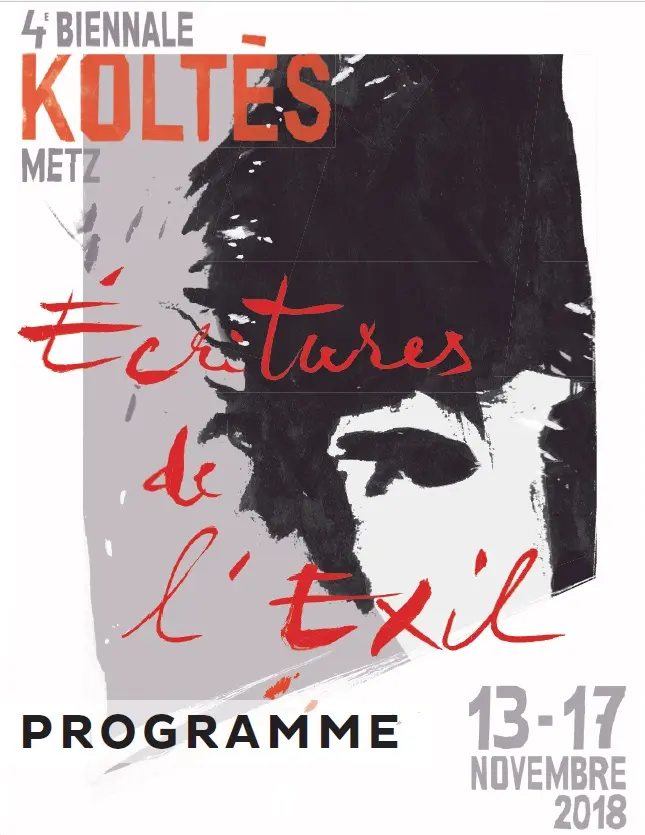

« Écritures de l’exil » : du 13 au 17 novembre 2018, la 4e Biennale explore les frontières, l’exil et la parole des déplacés, par la lecture, le théâtre, le cinéma et la rencontre.
Lectures et spectacles se sont déployés dans des lieux inattendus de Metz et du Val de Fensch : médiathèques, musée de la Cour d’Or, centre d’art Faux Mouvement, Agora, théâtre municipal de Serémange-Erzange, Théâtre du Saulcy. Beaucoup d’artistes et compagnies du territoire ont participé, avec des ateliers de pratique pour des élèves et des habitants.


Programme
- Mar 13
nov.20 hCinéma KLUB, Metz« Des spectres hantent l’Europe »
Projection du documentaire de Maria Kourkouta et Niki Giannari, tourné en mars 2016 dans le camp d’Idomeni, à la frontière gréco-macédonienne. En partenariat avec le cinéma KLUB et The Bloggers Cinéma Club.
- Mer 14
nov.17 h → 18 hMédiathèque du Sablon, MetzPasseport · Traverser l’autoroute · Ma nostalgie
Trois lectures : « Passeport », lecture à deux voix et deux langues (français et maltais) d’un poème d’Antoine Cassar, Cie de l’Escalier ; « Traverser l’autoroute » de Maxime Fleury, Cie L’Assolatelier ; « Ma nostalgie » de Julien Bissila et Richard Mahoungou, Cie Astrov.
- Mer 14
nov.19 h · 20 h 15Agora, Metz-La Patrotte« Dans la solitude des champs de coton » · « Nos histoires »
Mise en voix du texte de Koltès par les élèves de troisième année des conservatoires de Metz-Métropole et du Grand Nancy, sous la direction de Vincent Goethals. Puis lancement de « Nos histoires », feuilleton à deux voix (français et arabe) lu pendant quatre jours.
- Mer 14
nov.19 h 30 → 21 hThéâtre municipal de Serémange-Erzange · Espace BMK« Frontière Nord » · « J’appelle mes frères » · « Les Suppliants »
Lecture musicale du texte de Suzanne Lebeau avec un chœur de jeunes de la vallée de la Fensch ; « J’appelle mes frères » de Jonas Hassen Khemiri (La Mandarine Blanche & L’SKBL) ; « Les Suppliants », lecture-action du texte d’Elfriede Jelinek (Cie de l’Escalier).
- Jeu 15
nov.17 h · 18 h 30Musée de la Cour d’Or, Metz« Murs » · « Les chemins de traverse »
Installation performative dans l’espace public par la Cie des 4 coins (Nadège Coste), puis lecture mise en espace d’un texte d’écriture collective avec la Cie Les Heures Paniques (Maud Galet-Lalande).
- Ven 16
nov.18 h · 21 hCentre d’art contemporain Faux Mouvement, Metz« Exil » · « Allers-retours »
Rencontre avec Soko Phay autour du film « Exil » de Rithy Panh, puis lecture-spectacle d’Ödön von Horváth par La Mandarine Blanche (mise en scène Alain Batis).
- Sam 17
nov.16 h → 20 hThéâtre du Saulcy · Médiathèque VerlaineSindbad · Gaudé · « Qui me comprend »
« Le Dernier Voyage de Sindbad » d’après Erri De Luca (La Mandarine Blanche) ; « De sang et de lumière », poèmes de Laurent Gaudé (Cie du Jarnisy) ; soirée de clôture avec « Qui me comprend » de Wejdan Nassif (Cie Pardès Rimonim).
27 mars → 6 avril 2019
La 4e Biennale s’est prolongée au printemps 2019 avec plusieurs spectacles et une projection à Metz.
- La Nuit juste avant les forêts — film réalisé par Hugo Becker, déambulation en plan-séquence dans le Metz de Koltès : 27 mars (Théâtre du Saulcy) et 1er avril (cinéma KLUB).
- La Nuit juste avant les forêts — spectacle au Théâtre du Saulcy du 27 au 30 mars, avec bord de scène et master class.
- Roberto Zucco — nouvelle production de l’Opéra-Théâtre de Metz Métropole, mise en scène de Paul-Émile Fourny, les 3, 4, 5 et 6 avril à 20 h.
- Dans la solitude des champs de coton — mise en scène de Vincent Goethals, les 4 et 5 avril.
- Moi Bernard — d’après les Lettres de Koltès, adaptation de Jean de Pange et Claire Cahen, du 4 au 6 avril.
- Les chemins de traverse — création collective mise en voix, le 6 avril à 17 h.
- Survivre — performance itinérante sur trois sites du Pays messin, en mars.